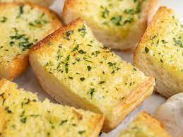

Here's how to make amazing garlic bread!

Description
I have always been a fan of Garlic Bread, especially the one from Domino's so I decided to try making some at home and guess what? It turned out to be amazing!!! So I'm going to teach you how to make some awedsome garlic bread at home :D
Things You'll Need
- 1 loaf French bread
- 1/2 cup butter, softened
- 1/2 teaspoon garlic powder
- 1/4 teaspoon salt
- 1/4 teaspoon ground black pepper
- 2 cups shredded mozzarella cheese
- 1/2 cup grated Parmesan cheese
Steps:
- Preheat oven to 350 degrees F (175 degrees C).
- Cut the loaf of bread in half lengthwise, then cut each half into 6 pieces, about 2 inches wide. Place the bread on a baking sheet.
- In a medium bowl, mix together the butter, garlic powder, salt and pepper. Stir in the mozzarella and Parmesan cheeses. Spread this mixture on the bread slices.
- Bake for 10 minutes in the preheated oven, until cheese is melted and bread is lightly toasted. Broil for 1 to 2 minutes, until bread is golden brown.
- Serve and Enjoy!